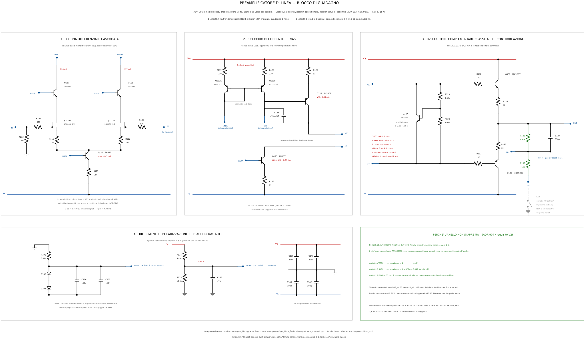
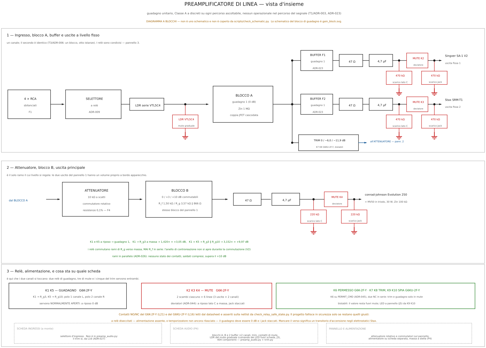
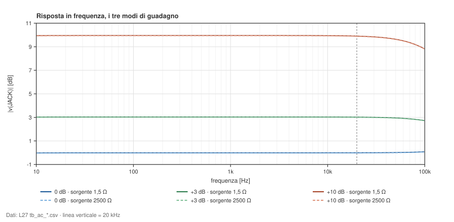
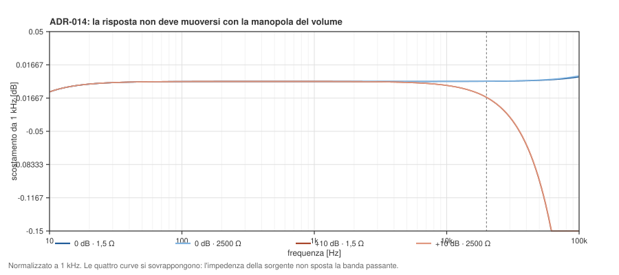
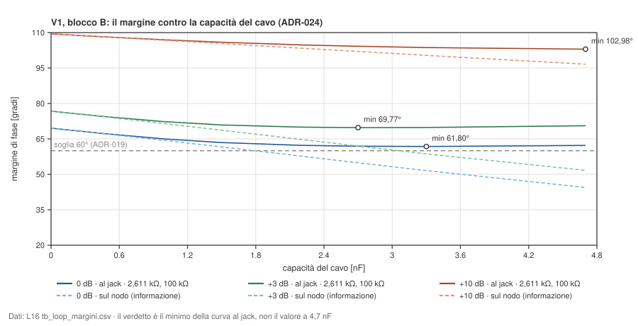
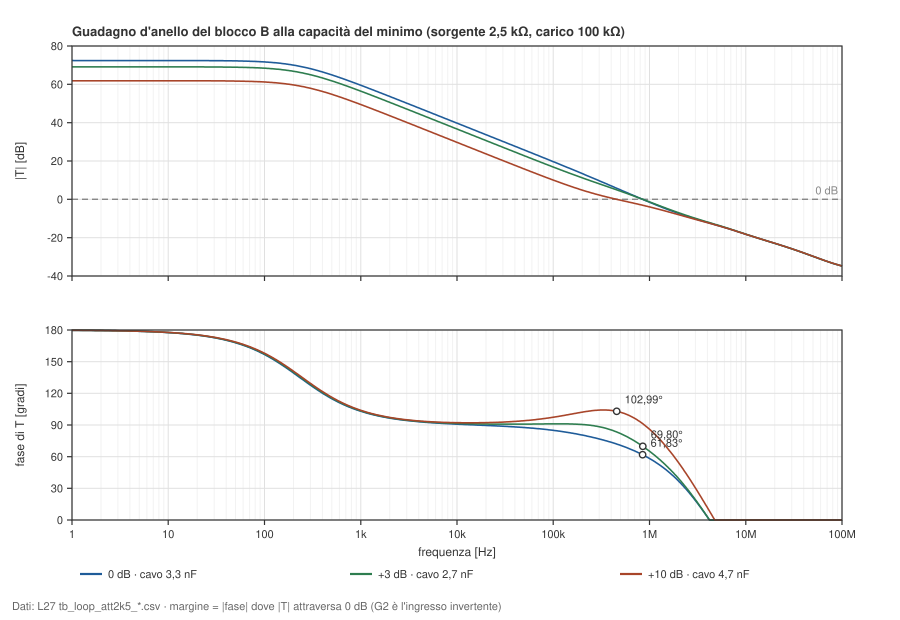
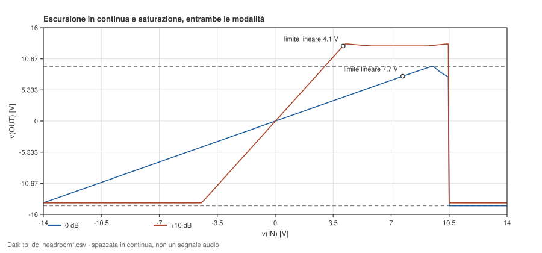
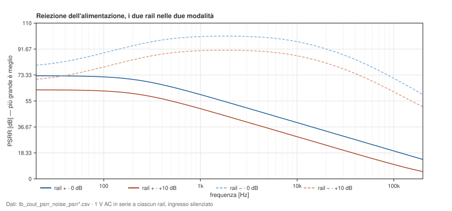
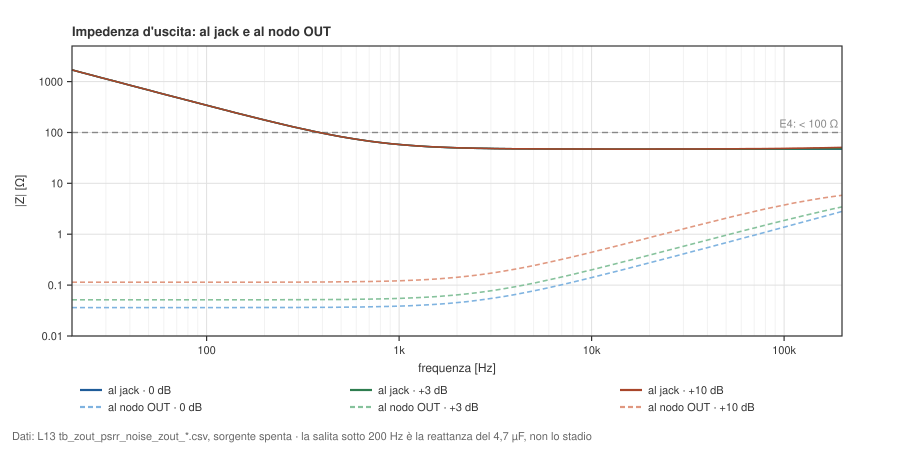
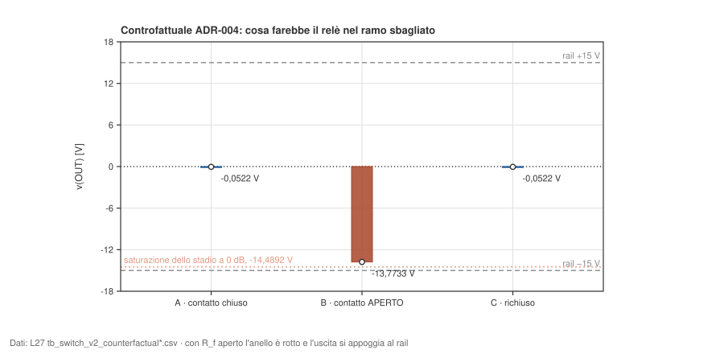

Bozza · dati del 2026-09-14, lotti L27 e L16 · modelli in gran parte segnaposto
Classe A pura a componenti discreti, senza operazionali nel percorso del segnale. Guadagno 0 / +3 / +10 dB, trim 0 / −6 / −12 dB sull’uscita variabile.
models/jfet/lsk489.lib, ma nessuno di questi deck lo include. Nessuna cifra di distorsione. La provenienza è scritta sotto ogni titolo di sezione, ed è letta dagli .include dei deck, non dichiarata.Il progetto sostituisce un Technics SU-9070 la cui struttura di guadagno richiede 46 dB di attenuazione, causa misurabile della mancanza di dinamica lamentata. La topologia canonica è in circuits/preamp/; i banchi di prova in spice/preamp/tb/; i dati in docs/preamp/data/2026-09-14/L27/dopo/ (tre modi di guadagno, ADR-026) e docs/preamp/data/2026-09-14/L16/dopo/ (il trim, ADR-027).
Il blocco è uno solo (ADR-006) e il prodotto lo usa otto volte: per canale, il blocco A (buffer d’ingresso), i due buffer delle uscite fisse (ADR-023) e il blocco B (uscita variabile). È l’oggetto da giudicare.


Deck spice/preamp/tb/tb_op.cir · dati docs/preamp/data/2026-09-14/L27/dopo/tb_op/
Modelli del costruttore: LS352 · segnaposto scritti a mano: 1N4148, 2N5401, 2N5551, LSK489, MJE15032, MJE15033 (NC-017) · tutti KF = 0: nessun rumore 1/f (NC-004)
Corrente dai rail e punto di lavoro di ogni dispositivo attivo, a ingresso a massa. Il trim sta dopo il condensatore d’uscita del blocco A e non tocca la continua.
| Grandezza | Valore |
|---|---|
| Corrente dal rail +15 V | 26,3623 mA |
| Corrente dal rail −15 V | 27,3855 mA |
| Dispositivo | IC / ID [mA] | VBE / VGS [V] | VBC [V] |
|---|---|---|---|
| JQ110A | 2,2113 | -0,4914 | — |
| JQ110B | 2,1625 | -0,5026 | — |
| Q106 | 4,3739 | 0,6911 | -13,9272 |
| Q117 | 2,1931 | 0,6754 | -3,8021 |
| Q118 | 2,1447 | 0,6748 | -3,9269 |
| Q121A | -2,1336 | 0,7028 | 0,493 |
| Q121B | -2,1358 | 0,7026 | 0,3691 |
| Q122 | -6,4425 | 0,7016 | -12,6952 |
| Q125 | 6,4425 | 0,7017 | -12,6628 |
| Q127 | 5,5332 | 0,7006 | -1,2454 |
| Q132 | 14,5573 | 0,6621 | -14,022 |
| Q133 | -14,5573 | 0,6621 | -13,9889 |
Deck spice/preamp/tb/tb_ac.cir · dati docs/preamp/data/2026-09-14/L27/dopo/tb_ac/
Modelli del costruttore: LS352 · segnaposto scritti a mano: 1N4148, 2N5401, 2N5551, LSK489, MJE15032, MJE15033 (NC-017) · tutti KF = 0: nessun rumore 1/f (NC-004)

| Curva | 20 Hz | 1 kHz | 20 kHz | 100 kHz |
|---|---|---|---|---|
| 0 dB · sorgente 1,5 Ω (K11) | −0,0112 dB | −0,0086 dB | −0,0046 dB | 0,0799 dB |
| 0 dB · sorgente 2500 Ω (attenuatore a metà) | −0,0329 dB | −0,0303 dB | −0,0263 dB | 0,0593 dB |
| +3 dB · sorgente 1,5 Ω (K11) | 3,0345 dB | 3,0371 dB | 3,0236 dB | 2,7249 dB |
| +3 dB · sorgente 2500 Ω (attenuatore a metà) | 3,0128 dB | 3,0154 dB | 3,0020 dB | 2,7047 dB |
| +10 dB · sorgente 1,5 Ω (K11) | 9,9557 dB | 9,9582 dB | 9,9056 dB | 8,8096 dB |
| +10 dB · sorgente 2500 Ω (attenuatore a metà) | 9,9340 dB | 9,9365 dB | 9,8840 dB | 8,7906 dB |
L’attenuatore a gradini ha un’impedenza d’uscita che varia con la manopola. Se il cascode d’ingresso fa il suo lavoro, la forma della risposta non si muove: la risposta a 20 kHz riferita a quella a 1 kHz resta la stessa con la sorgente a 1,5 Ω e a 2500 Ω, in ogni modo.

| Modo | scarto assoluto a 1 kHz | scarto assoluto a 20 kHz | 20 kHz riferito a 1 kHz — la claim |
|---|---|---|---|
| 0 dB | −0,02167 dB | −0,02163 dB | 4,33·10−5 dB |
| +3 dB | −0,02167 dB | −0,02161 dB | 6,10·10−5 dB |
| +10 dB | −0,02167 dB | −0,02154 dB | 1,34·10−4 dB |
Ogni scarto è «sorgente 2500 Ω meno sorgente 1,5 Ω». Le colonne di scarto assoluto coincidono a 1 kHz e a 20 kHz perché sono una perdita di livello a banda larga, il partitore fra la sorgente e la Zin del blocco: non misurano la claim. La claim è l’ultima colonna.
Con il carico Stax-like da 50 kΩ: −0,0164 dB a 1 kHz, −0,0239 dB a 20 Hz, −0,1345 dB a 5 Hz. Il polo è quello del condensatore d’uscita da 4,7 µF (E8, ADR-007).
Deck spice/preamp/tb/tb_loop.cir · dati docs/preamp/data/2026-09-14/L16/dopo/tb_loop/ (blocco B)
Modelli del costruttore: LS352 · segnaposto scritti a mano: 1N4148, 2N5401, 2N5551, LSK489, MJE15032, MJE15033 (NC-017) · tutti KF = 0: nessun rumore 1/f (NC-004)
Deck spice/preamp/tb/tb_loop_blockA.cir · dati docs/preamp/data/2026-09-14/L16/dopo/tb_loop_blockA/ (blocco A)
Modelli del costruttore: LS352 · segnaposto scritti a mano: 1N4148, 2N5401, 2N5551, LSK489, MJE15032, MJE15033 (NC-017) · tutti KF = 0: nessun rumore 1/f (NC-004)
Deck spice/preamp/tb/tb_loop_bufferfissa.cir · dati docs/preamp/data/2026-09-14/L27/dopo/tb_loop_bufferfissa/ (buffer delle fisse)
Modelli del costruttore: LS352 · segnaposto scritti a mano: 1N4148, 2N5401, 2N5551, LSK489, MJE15032, MJE15033 (NC-017) · tutti KF = 0: nessun rumore 1/f (NC-004)
Soglia: 60° su ogni combinazione della matrice (ADR-019). Dove si applica la sonda lo dice ADR-024: la sonda capacitiva è il cavo d’interconnessione e sta al jack, dopo i 47 Ω e il 4,7 µF, sul blocco B e sui buffer delle fisse; il verdetto è il minimo sulla spazzata fino a 4,7 nF, non il valore a 4,7 nF. Il blocco A pilota il cablaggio interno fino all’attenuatore e si giudica con una capacità realistica, ≤ 1 nF. La sonda sul nodo d’uscita resta come informazione.
Iniezione di tensione al gate del JFET invertente: quel nodo non assorbe corrente e la rete di controreazione lo pilota a bassa impedenza, quindi l’iniezione semplice è esatta. I relè commutano la rete di controreazione, quindi il margine è diverso nei tre modi, e l’impedenza dell’attenuatore cambia con la manopola: per questo si spazza tutto.
| Istanza | Dove cade il minimo | Minimo della spazzata | A 4,7 nF | Sonda sul nodo | Esito |
|---|---|---|---|---|---|
| Blocco B · 0 dB | sorgente 2,611 kΩ · carico 100 kΩ · cavo 3,3 nF | 61,803° | 62,234° | 44,429° | conforme |
| Blocco B · +3 dB | sorgente 2,611 kΩ · carico 100 kΩ · cavo 2,7 nF | 69,773° | 70,576° | 51,684° | conforme |
| Blocco B · +10 dB | sorgente 2,611 kΩ · carico 100 kΩ · cavo 4,7 nF | 102,980° | 102,980° | 96,631° | conforme |
| Blocco A · trim 0 dB | sorgente 430 Ω · cablaggio 1 nF | 63,495° | — | — | conforme |
| Blocco A · trim −6 dB | sorgente 430 Ω · cablaggio 470 pF | 69,019° | — | — | conforme |
| Blocco A · trim −12 dB | sorgente 430 Ω · cablaggio 470 pF | 69,177° | — | — | conforme |
| Buffer delle fisse | carico 50 kΩ · cavo 2,7 nF | 61,632° | — | 40,968° | conforme |
Blocco B: 110 righe per modo al jack, sorgenti dell’attenuatore da 1 mΩ a (10 kΩ + Thévenin del trim)/4, carichi 100 kΩ e 10 kΩ. Le righe che esistevano già in L27 tornano identiche (scarto 0°). Blocco A: scala 845 / 464 / 464 Ω; senza trim il minimo è 63,363° (sorgente 430 Ω, 1 nF). Con 4,7 nF sul cablaggio, che ADR-024 non chiede, il blocco A a trim 0 dB scende a 41,62°.

Al jack il margine non è monotono: a 0 dB il minimo, 61,80°, cade a 3,3 nF, e a 4,7 nF la stessa curva risale a 62,23°. Letto a 4,7 nF il verdetto sarebbe ottimista. Sul nodo, dove nessun cavo vero sta, lo stesso blocco scende a 44,43°.
Deck docs/preamp/data/2026-09-14/L16/esplorazione/deck/toll_L16.cir · dati docs/preamp/data/2026-09-14/L16/esplorazione/toll_L16/ · deck d’esplorazione, non sotto spice/preamp/tb/
Modelli del costruttore: LS352 · segnaposto scritti a mano: 1N4148, 2N5401, 2N5551, LSK489, MJE15032, MJE15033 (NC-017) · tutti KF = 0: nessun rumore 1/f (NC-004)
| Modo | Dove cade il minimo | Minimo agli spigoli | Esito |
|---|---|---|---|
| Blocco B · 0 dB | C124 446,5 pF · C137 313,5 pF · Riso 46,53 Ω · sorgente 2,611 kΩ · carico 100 kΩ · cavo 3,1 nF | 61,422° | conforme |
| Blocco B · +3 dB | C124 446,5 pF · C137 346,5 pF · Riso 46,53 Ω · sorgente 2,611 kΩ · carico 100 kΩ · cavo 2,7 nF | 68,644° | conforme |
C124 e C137 a ±5 %, Riso a ±1 %, su una griglia fitta di cavo fra 2 e 4,7 nF. Il +10 dB non è negli spigoli: sta oltre i 100°.

| Blocco B, sorgente 2,5 kΩ, carico 100 kΩ | |T| a 10 Hz | frequenza d’incrocio | margine |
|---|---|---|---|
| 0 dB · cavo 3,3 nF | 72,40 dB | 847,756 kHz | 61,829° |
| +3 dB · cavo 2,7 nF | 69,10 dB | 851,085 kHz | 69,799° |
| +10 dB · cavo 4,7 nF | 61,86 dB | 456,217 kHz | 102,994° |
Deck spice/preamp/tb/tb_trim.cir · dati docs/preamp/data/2026-09-14/L16/dopo/tb_trim/
Modelli del costruttore: LS352 · segnaposto scritti a mano: 1N4148, 2N5401, 2N5551, LSK489, MJE15032, MJE15033 (NC-017) · tutti KF = 0: nessun rumore 1/f (NC-004)
Il trim è uno solo, fra l’uscita del blocco A e l’attenuatore (ADR-027): le uscite fisse prendono il segnale prima di lui e restano copia fedele della sorgente. Scala per canale 845 / 464 / 464 Ω, a relè bistabili. L’attenuazione è misurata col carico dell’attenuatore.
| Posizione | Attenuazione a 1 kHz |
|---|---|
| 0 dB | −0,0001 dB |
| −6 dB | −6,0030 dB |
| −12 dB | −11,9394 dB |
E3 chiede ≥ 100 kΩ al connettore d’ingresso in ogni posizione del trim, sul minimo di |Zin| fra 20 Hz e 20 kHz («Nota su E3»). Col trim sul ramo variabile il connettore vede il blocco A; la capacità del selettore è spazzata.
| Posizione del trim | selettore 1 fF | selettore 22 pF | selettore 68 pF | Esito |
|---|---|---|---|---|
| senza trim (riferimento) | 999,999 kΩ | 349,794 kΩ | 121,068 kΩ | — |
| 0 dB | 999,999 kΩ | 349,794 kΩ | 121,068 kΩ | conforme |
| −6 dB | 999,999 kΩ | 349,794 kΩ | 121,068 kΩ | conforme |
| −12 dB | 999,999 kΩ | 349,794 kΩ | 121,068 kΩ | conforme |
Deck spice/preamp/tb/tb_zout_psrr_noise.cir · dati docs/preamp/data/2026-09-14/L27/dopo/tb_zout_psrr_noise/
Modelli del costruttore: LS352 · segnaposto scritti a mano: 1N4148, 2N5401, 2N5551, LSK489, MJE15032, MJE15033 (NC-017) · tutti KF = 0: nessun rumore 1/f (NC-004)
Deck spice/preamp/tb/tb_noise_breakdown.cir · dati docs/preamp/data/2026-09-14/L27/dopo/tb_noise_breakdown/
Modelli del costruttore: LS352 · segnaposto scritti a mano: 1N4148, 2N5401, 2N5551, LSK489, MJE15032, MJE15033 (NC-017) · tutti KF = 0: nessun rumore 1/f (NC-004)
E5 chiede meno di 10 µV RMS in uscita fra 20 Hz e 20 kHz, non pesati, e di questi 1 µV è la quota dell’alimentazione (ADR-020). Nessun modello simulato ha rumore 1/f, quindi queste cifre sono un pavimento, non una previsione, e il pavimento cade proprio dove il rumore del blocco è dominante (NC-004). Ogni totale è ricontrollato integrando lo spettro versionato.
| Blocco da solo, uscita al jack | Rumore 20 Hz–20 kHz |
|---|---|
| A) 0 dB, sorgente 1 Ω — blocco A intrinseco | 1,157 µV |
| B) 0 dB, sorgente 430 Ω — blocco A sul phono | 1,216 µV |
| C) 0 dB, sorgente 2500 Ω — blocco B | 1,470 µV |
| E) +3 dB, sorgente 2500 Ω — blocco B | 2,011 µV |
| D) +10 dB, sorgente 2500 Ω — blocco B, caso peggiore | 4,229 µV |
| 0 dB · sorgente 430 Ω (phono) | 1,216 µV |
| +3 dB · sorgente 430 Ω | 1,634 µV |
| +10 dB · sorgente 430 Ω | 3,338 µV |
La catena col trim: blocco A, trim, attenuatore, blocco B, sorgente phono (430 Ω) o K11 (1,5 Ω), attenuatore al massimo o a metà corsa, tre modi. Per ogni posizione del trim la cella peggiore:
| Trim | Cella peggiore | Rumore | Esito contro 10 µV |
|---|---|---|---|
| senza trim (riferimento) | +10 dB · attenuatore al massimo · sorgente 430 Ω | 4,918 µV | — |
| 0 dB | +10 dB · attenuatore al massimo · sorgente 430 Ω | 4,918 µV | sotto soglia — pavimento, NC-004 |
| −6 dB | +10 dB · attenuatore a metà · sorgente 430 Ω | 4,374 µV | sotto soglia — pavimento, NC-004 |
| −12 dB | +10 dB · attenuatore a metà · sorgente 430 Ω | 4,287 µV | sotto soglia — pavimento, NC-004 |
Deck spice/preamp/tb/tb_dc_headroom.cir · dati docs/preamp/data/2026-09-14/L16/dopo/tb_dc_headroom/
Modelli del costruttore: LS352 · segnaposto scritti a mano: 1N4148, 2N5401, 2N5551, LSK489, MJE15032, MJE15033 (NC-017) · tutti KF = 0: nessun rumore 1/f (NC-004)

| Modo | Guadagno a 0 V | Finestra all’1 % in ingresso | v(OUT) ai bordi | Limite lineare | Saturazione |
|---|---|---|---|---|---|
| 0 dB | 0,99971 × | −13,25 … 7,65 V | −13,263 … 7,631 V | 5,3959 V RMS | 6,6055 V RMS |
| +3 dB | 1,41959 × | −9,30 … 7,65 V | −13,226 … 10,836 V | 7,6620 V RMS | 9,3414 V RMS |
| +10 dB | 3,14937 × | −4,15 … 4,10 V | −13,123 … 12,858 V | 9,0921 V RMS | 9,3464 V RMS |
I modi non saturano allo stesso livello, e la differenza non sta nello stadio d’uscita: a guadagno unitario v(FB) insegue v(OUT), il modo comune della coppia d’ingresso sale con l’uscita e si ferma per primo; con più guadagno v(FB) è una frazione di v(OUT) e l’uscita arriva più in alto. È una proprietà della topologia; i valori esatti dipendono dai modelli.
Il caso che preoccupa è E6 × E2: il FiiO K11 a fondo scala dà 2,7 V RMS, e con rail a ±15 V (ADR-015) il +10 dB non ha quasi margine senza trim. La cifra pubblicata usa una metrica, M1, scelta in L16:
| Modo | trim 0 dB | trim −6 dB | trim −12 dB |
|---|---|---|---|
| M1 · 0 dB | +6,02 dB | +12,02 dB | +17,96 dB |
| M1 · +3 dB | +6,02 dB | +12,02 dB | +17,96 dB |
| M1 · +10 dB | +0,58 dB | +6,58 dB | +12,52 dB |
La cifra per NC-009 è +6,58 dB: +10 dB, trim a −6 dB, metrica M1. Il caso raggiungibile per errore, +10 dB col trim a 0 dB, lascia +0,58 dB; il LED del trim (ADR-027) lo rende visibile.
Le altre due cifre che circolavano misurano cose diverse, e restano solo etichettate:
| +10 dB | trim 0 dB | trim −6 dB | trim −12 dB |
|---|---|---|---|
| M1 — 1 % contro il richiesto misurato — la cifra | +0,58 dB | +6,58 dB | +12,52 dB |
| M2 — saturazione contro il richiesto nominale (ADR-015) | +0,79 dB | +6,79 dB | +12,79 dB |
| M3 — 1 % contro il richiesto nominale (dossier fino a L32) | +0,55 dB | +6,55 dB | +12,55 dB |
Deck spice/preamp/tb/tb_zout_psrr_noise.cir · dati docs/preamp/data/2026-09-14/L27/dopo/tb_zout_psrr_noise/
Modelli del costruttore: LS352 · segnaposto scritti a mano: 1N4148, 2N5401, 2N5551, LSK489, MJE15032, MJE15033 (NC-017) · tutti KF = 0: nessun rumore 1/f (NC-004)

| Rail e modo | 100 Hz | 1 kHz | 10 kHz | 100 kHz |
|---|---|---|---|---|
| rail + · 0 dB | 72,12 dB | 59,57 dB | 39,78 dB | 19,69 dB |
| rail + · +3 dB | 69,07 dB | 56,53 dB | 36,73 dB | 17,05 dB |
| rail + · +10 dB | 62,16 dB | 49,61 dB | 29,82 dB | 10,97 dB |
| rail − · 0 dB | 84,33 dB | 97,71 dB | 96,21 dB | 71,06 dB |
| rail − · +3 dB | 81,28 dB | 94,67 dB | 93,16 dB | 68,41 dB |
| rail − · +10 dB | 74,36 dB | 87,74 dB | 86,23 dB | 62,32 dB |
Il lato debole è il rail positivo a +10 dB: 29,82 dB a 10 kHz. La quota di ripple che l’alimentatore può lasciare si ricava da queste curve («Nota su E5 — la quota del ripple», ADR-020).
Deck spice/preamp/tb/tb_zout_psrr_noise.cir · dati docs/preamp/data/2026-09-14/L27/dopo/tb_zout_psrr_noise/
Modelli del costruttore: LS352 · segnaposto scritti a mano: 1N4148, 2N5401, 2N5551, LSK489, MJE15032, MJE15033 (NC-017) · tutti KF = 0: nessun rumore 1/f (NC-004)

| Punto di misura | 20 Hz | 1 kHz | 20 kHz | 100 kHz |
|---|---|---|---|---|
| al jack · 0 dB | 1693 Ω | 58,7591 Ω | 48,0471 Ω | 48,0493 Ω |
| al jack · +3 dB | 1693 Ω | 59,1132 Ω | 48,4876 Ω | 48,6591 Ω |
| al jack · +10 dB | 1693 Ω | 60,5851 Ω | 50,3058 Ω | 51,0619 Ω |
| al nodo OUT · 0 dB | 1,0355 Ω | 1,0355 Ω | 1,0673 Ω | 1,6673 Ω |
| al nodo OUT · +3 dB | 1,4703 Ω | 1,4704 Ω | 1,5125 Ω | 2,2607 Ω |
| al nodo OUT · +10 dB | 3,2619 Ω | 3,2621 Ω | 3,3405 Ω | 4,5548 Ω |
Deck spice/preamp/tb/tb_switch_v2.cir · dati docs/preamp/data/2026-09-14/L27/dopo/tb_switch_v2/
Modelli del costruttore: LS352 · segnaposto scritti a mano: 1N4148, 2N5401, 2N5551, LSK489, MJE15032, MJE15033 (NC-017) · tutti KF = 0: nessun rumore 1/f (NC-004)
V2: l’anello non si apre mai commutando. Il deck modella K1 e K5 come contatti veri, con rimbalzi in chiusura e in apertura, e percorre ogni passaggio fra 0, +3 e +10 dB, compresi i due ordini in cui una coppia di relè può arrivare sul salto diretto. La previsione falsificabile: v(OUT) resta nell’inviluppo del regime a +10 dB in ogni istante.
| Finestra | v(OUT) max | v(OUT) min | Dentro l’inviluppo del +10 dB |
|---|---|---|---|
| regime a 0 dB | 0,4831 V | −0,5162 V | sì |
| regime a +3 dB | 0,6859 V | −0,7330 V | sì |
| regime a +10 dB | 1,5218 V | −1,6262 V | sì |
| regime a +10 dB, seconda volta | 1,5218 V | −1,6263 V | sì |
| 0 → +3 dB (K1) | 0,6859 V | −0,7330 V | sì |
| +3 → +10 dB (K5) | 1,5218 V | −1,6263 V | sì |
| +10 → +3 dB (K5) | 1,5218 V | −0,7330 V | sì |
| +3 → 0 dB (K1) | 0,6860 V | −0,5162 V | sì |
| 0 → +10 dB, K5 per primo | 1,5218 V | −1,6263 V | sì |
| +10 → 0 dB, K1 per primo | 1,5218 V | −1,3657 V | sì |
Inviluppo del regime a +10 dB: +1,5218 / −1,6263 V. Estremi sull’intera corsa di 70 ms, rimbalzi compresi: +1,5218 / −1,6263 V. La forma d’onda non è versionata; le finestre sono confrontate con le meas del log.
Deck spice/preamp/tb/tb_switch_v2_counterfactual.cir · dati docs/preamp/data/2026-09-14/L27/dopo/tb_switch_v2_counterfactual/
Modelli del costruttore: LS352 · segnaposto scritti a mano: 1N4148, 2N5401, 2N5551, LSK489, MJE15032, MJE15033 (NC-017) · tutti KF = 0: nessun rumore 1/f (NC-004)
ADR-004 ha scartato il contatto in serie a Rf. Una decisione porta informazione solo se la disposizione scartata è mostrata fallire: con Rf aperto non esiste più controreazione, e l’uscita va a −13,7733 V, dove lo stadio non amplifica più niente.

| Stato | Configurazione | v(OUT) | v(FB) |
|---|---|---|---|
| A | contatto CHIUSO, R_f = 1,50 kΩ | −0,052218 V | −0,016566 V |
| B | contatto APERTO, R_f = 1e12 Ω | −13,773335 V | −0,000000 V |
| C | richiuso, controprova di B | −0,052218 V | −0,016566 V |
C esiste per escludere che B sia un artefatto del solutore: A e C coincidono. La disposizione scelta commuta Rg verso massa, e i due rami di ADR-026 stanno in parallelo: a contatti aperti il guadagno è 1 e l’anello non si apre mai.
Deck spice/preamp/tb/tb_v3_overload.cir · dati docs/preamp/data/2026-09-14/L27/dopo/tb_v3_overload/
Modelli del costruttore: LS352 · segnaposto scritti a mano: 1N4148, 2N5401, 2N5551, LSK489, MJE15032, MJE15033 (NC-017) · tutti KF = 0: nessun rumore 1/f (NC-004)
V3, recupero dalla saturazione: +10 dB, 1 kHz, pilotato oltre il clipping per alcuni cicli e poi riportato a un livello basso.
| Grandezza | Valore |
|---|---|
| v(OUT) massima, in clipping | +13,258 V |
| v(OUT) minima, in clipping | −13,781 V |
| v(JACK) a fine corsa, 20 ms | −4,93 mV |
Deck spice/preamp/tb/tb_mute_corto.cir · dati docs/preamp/data/2026-09-14/L27/dopo/tb_mute_corto/
Modelli del costruttore: LS352 · segnaposto scritti a mano: 1N4148, 2N5401, 2N5551, LSK489, MJE15032, MJE15033 (NC-017) · tutti KF = 0: nessun rumore 1/f (NC-004)
Criterio di ADR-021: Tj = 60 °C + Pmedia · RθJA ≤ 125 °C, con RθJA = 62,5 °C/W per i MJE in TO-220. Casi: normale, mute, corto su ciascuna uscita, apparecchio spento su una fissa; manopola e ampiezza spazzate, 1 kHz e 20 kHz. Il dispositivo d’uscita peggiore per blocco e modo:
| Blocco | 0 dB | +3 dB | +10 dB | Esito |
|---|---|---|---|---|
| Blocco A | 213,981 mW · 73,4 °C | 213,593 mW · 73,3 °C | 213,593 mW · 73,3 °C | conforme |
| Buffer fissa 1 | 298,097 mW · 78,6 °C | 298,107 mW · 78,6 °C | 298,114 mW · 78,6 °C | conforme |
| Buffer fissa 2 | 298,097 mW · 78,6 °C | 298,107 mW · 78,6 °C | 298,114 mW · 78,6 °C | conforme |
| Blocco B | 298,097 mW · 78,6 °C | 339,624 mW · 81,2 °C | 348,015 mW · 81,8 °C | conforme |
Classe A sui percorsi ascoltabili (ADR-023): 0 righe su 398 ne escono. La 47 Ω dell’uscita principale dissipa al massimo 0,155 / 0,309 / 1,091 W a 0 / +3 / +10 dB, e va dimensionata di conseguenza.
Solo i requisiti che queste misure toccano. Il resto non è qui perché non è ancora stato misurato, non perché sia soddisfatto.
| Req. | Chiede | Misurato | Esito |
|---|---|---|---|
| E1 | guadagno nominale 0 dB | −0,0086 dB a 1 kHz | conforme |
| E2 | +3 dB (±0,1) e +10 dB (9,5–10,5) | +3,0371 / +9,9582 dB a 1 kHz | conforme |
| E3 | ≥ 100 kΩ al connettore, ogni posizione del trim | min 121,068 kΩ con 68 pF | conforme |
| E4 | Zout < 100 Ω in banda, esclusa la reattanza del cap | ≤ 60,5851 Ω a 1 kHz al jack, tre modi | conforme sull’uscita principale; fisse e manopola: NC-008 |
| E5 | rumore in uscita < 10 µV RMS | catena ≤ 4,918 µV | sotto soglia, ma pavimento senza 1/f — NC-004 aperta |
| E6×E2 | 2,7 V RMS d’ingresso a +10 dB | M1 +6,58 dB col trim a −6 dB · +0,58 dB a trim 0 | margine col trim (ADR-015, ADR-027); legenda di pannello ancora da fare (NC-009) |
| V1 | margine ≥ 60° su tutta la matrice (ADR-019, ADR-024) | minimo 61,632° · Buffer delle fisse | conforme |
| V2 | l’anello non si apre mai commutando | 10 finestre su 10 nell’inviluppo · controfattuale a −13,773 V | conforme |
| V3 | recupero dalla saturazione | clipping +13,258 / −13,781 V · −4,93 mV al jack a fine corsa | impaginato dal CSV, senza controllo incrociato |
| P7 | corto e mute a tempo indefinito, Tj ≤ 125 °C | Tj massima 81,8 °C · 0 righe ascoltabili fuori classe A | conforme |
| V4 | THD/THD+N | assente | modelli segnaposto: una cifra sarebbe priva di significato |
spice/preamp/tb/.Ogni sezione dichiara il deck, la cartella dei dati e i modelli, e questi ultimi sono letti dagli .include del deck: un modello è «del costruttore» se sta in models/ con la sua .provenance.json, «segnaposto» se sta in spice/preamp/placeholder_devices.lib.
| Modello istanziato | Parte | File | Tipo | KF |
|---|---|---|---|---|
D1N4148 | 1N4148 | spice/preamp/placeholder_devices.lib | segnaposto | 0 |
LS350 | LS352 | models/bjt_pnp/ls350.lib | costruttore | 0 |
LSK489X | LSK489 | spice/preamp/placeholder_devices.lib | segnaposto | 0 |
NMJE15032 | MJE15032 | spice/preamp/placeholder_devices.lib | segnaposto | 0 |
NSS2N5551 | 2N5551 | spice/preamp/placeholder_devices.lib | segnaposto | 0 |
PMJE15033 | MJE15033 | spice/preamp/placeholder_devices.lib | segnaposto | 0 |
PSS2N5401 | 2N5401 | spice/preamp/placeholder_devices.lib | segnaposto | 0 |